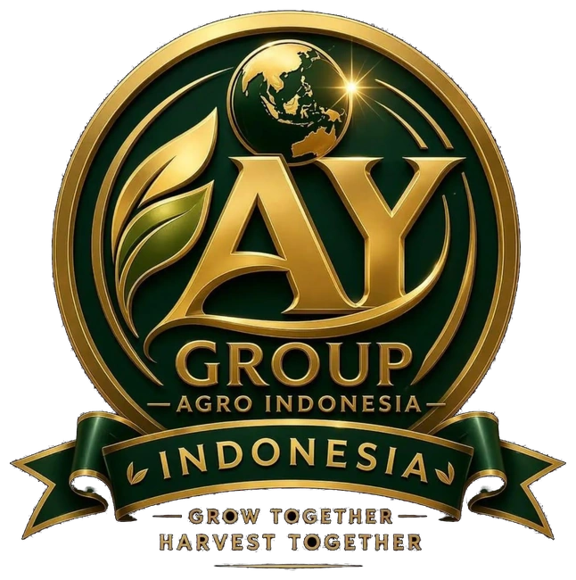

PROGRAM KETAHANAN PANGAN
KARTU ANGGOTA DIGITAL
Identitas resmi anggota terverifikasi
Nama Peserta
-
- Nomor Anggota
- -
- Wilayah
- -
- Status
- Aktif
ANGGOTA
TERVERIFIKASI
TERVERIFIKASI
SCAN QR
UNTUK VALIDASI
UNTUK VALIDASI
Petani Berdaya, Pangan Berjaya